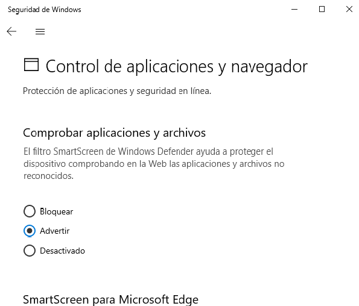
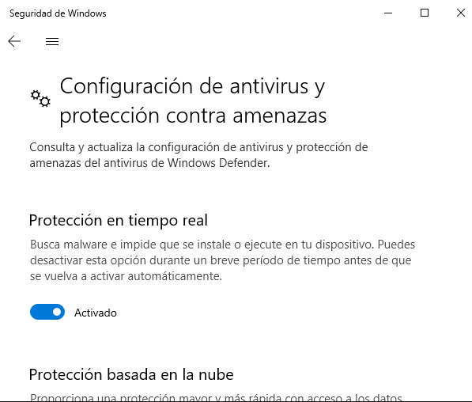

3.4. Software antiintrusos (antivirus)¶
El software antiintrusos es todo aquel que se encarga de proteger al sistema de los ataques de software malicioso. Pueden distinguirse, fundamentalmente, tres tipos distintos, complementarios entre sí:
- IDS (o NIDS)
que son aplicaciones que monitorizan el tráfico de red buscando comportamientos anómalos típicos del software malicioso.
Por hacer
Probar tripwire para ver si es conveniente crear una práctica con él.
- Cortafuegos (firewalls en inglés)
Los cortafuegos son aplicaciones que controlan el tráfico de red permitiendo o rechazando conexiones según criterios de capa de red o de transporte. Si utilizan criterios de capa de aplicación entonces estamos ante proxies.
Están presentes en los sistemas de escritorio, aunque en ellos su uso está muy simplificado, por lo que dejaremos su estudio para la unidad en la que tratamos la seguridad en redes y servidores. Windows 10, por ejemplo, dispone de un cortafuegos habilitado por defecto que detecta cuando una aplicación pretende abrir por primera vez una conexión por un determinado puerto y avisa de ello para que aceptemos tal conexión. Si la aceptamos, entenderá que a partir de ese momento la aplicación tendrá permiso para abrir ese tipo de conexión cada vez que lo requiera y, si lo rechazamos, la conexión quedará marcada como prohibida.
- Antivirus
Son aplicaciones que detectan la presencia de un recurso (archivo, correo electrónico, página web) que contiene código malicioso y, por tanto, representa una amenaza para el sistema. Son muy habituales en los sistemas de escritorio y a ellos dedicaremos el resto de los contenidos del epígrafe.
3.4.1. Tipos¶
Esencialmente hay dos tipos de antivirus:
Los residentes en el sistema que se instalan en el propio sistema operativo.
Los online que permiten hacer un análisis del sistema sin que el antivirus llegue a instalarse en ningún momento.
3.4.2. Funcionamiento¶
3.4.2.1. Estrategias de detección¶
Son dos:
Comparar los archivos con un catálogo de códigos de virus conocidos que se conoce como base de firmas. Si algún archivo contiene alguno de estos códigos, entonces, es un archivo potencialmente peligroso que puede ser o contener malware. Para utilizar esta estrategia es fundamental que la base de firmas se actualice periódicamente.
Detectar comportamientos que resulten sospechosos por ser característicos del malware. En este caso, la detección no se fundamente en encontrar algo ya conocido, sino en descubrir algo cuyo comportamiento entra dentro de determinados patrones, aunque aún no haya sido registrado.
3.4.2.2. Análisis¶
Los antivirus llevan a cabo dos tipos de análisis:
Análisis del sistema de archivos en busca de aquellos que puedan contener códigos reconocibles de virus. Este análisis se fundamenta en la estrategia de comparación; y lo pueden llevar a cabo tanto los antivirus instalados en el sistema como los online.
Análisis en tiempo real que comprueba si los códigos que se pretenden ejecutar son sospechosos, si los archivos que se pretenden copiar o descargar contiene código sospechoso; o si algún programa realiza en el sistema algún comportamiento propio de malware. Este análisis usa las dos estrategias referidas; y sólo puede ser llevada a cabo por los antivirus instalados. De hecho, estos antivirus no sólo se instalan, sino que se ejecutan como servicio y quedan residentes en memoria.
Es obvio que esta protección en tiempo real supone un consumo de recursos y una ralentización del sistema y que en gran medida esto, junto a su capacidad de detección, determina la bondad del antivirus.
3.4.2.3. Acciones¶
Cuando un antivirus detecta un código aparentemente malicioso proponen al usuario varias alternativas:
- Desinfección
Sólo en caso de que el malware, sea un virus y está adherido a un archivo, puede proponer desinfectar el archivo, esto es, eliminar de él el código malicioso.
- Eliminación
También puede proponer la eliminación directa del archivo.
- Puesta en cuarentena
Consisten en enviar el archivo a una zona de cuarenta donde el propia antivirus se asegura que el código sospecho no pueda ser ejecutado. De esta manera, si la detección se trató de un falso positivo, el archivo puede recuperarse. Por el contrario, si el usuario llega a la conclusión de que el archivo no estaba infectado o su pérdida no le supone ningún problema, puede optar por borrarlo definitivamente.
- Permisión
En este caso, se obvia la advertencia y se permite la ejecución. Para que se permita la ejecución el usuario debería estar completamente seguro de que el código no es malware, porque de lo contrario el sistema quedará infectado.
3.4.3. Oferta actual¶
En el mundo Linux, dada su diversidad, no es habitual la existencia de malware, por lo que los sistemas suelen carecer de ellos. Tienen, sin embargo, utilidad en los servidores de correo para detectar los virus adheridos a los adjuntos de los mensajes y prevenir a los usuarios clientes que reciben los mensajes. Es relativamente utilizado ClamAV.
En Windows, ha habido varios antivirus que han venido utilizándose:
Sin embargo, Windows 10 ya viene con un antivirus incluido de serie (Microsoft Defender) y la opinión generalizada es que es más que suficiente para defenderse del malware si se combina con la versión gratuita de Malwarebytes.
3.4.4. Ejercicios sobre antimalware¶
Pruebas de virus y antivirus. Para este ejercicio utilice una máquina virtual en que haya instalado un Windows 10 de 32 bits (p.e. este LTSC de evaluación) y vaya describiendo los pasos que realiza tomando captura de todos ellos:
- Situación preliminar
Deshabilite el Microsoft Defender, para lo cual debe ir a
Seguridad de Windows>Control de aplicaicones y navegadory desactivarComprobar aplicaciones y archivos:Además en
Seguridad de Windows>Protección antivirus y contra amenazas>Administrar la configuracióndesactive laProtección en tiempo real:Descargue el programa proporcionado por eicar.com que simula ser malware y déjelo en un lugar fácilmente localizable (p.e. el escritorio).
Ejecute el falso malware para que quede residente en memoria.
- Escaneo con antivirus online
Acceda a la página de ESET.
Descargue y ejecuta el antivirus online.
Compruebe si detecta el malware residente en memoria y el archivo de escritorio. ¿Qué acciones te sugiere?
- Escaneo con antivirus residente
Si el escaneo online, alteró la situación preliminar, vuelva a ella.
Active el Microsoft Defender.
¿Qué sucede? ¿Logra detectar eliminar el virus?
- Detección precoz
Elimine cualquier rastro del falso malware, si es que no lo logró en el paso anterior y asegúrese de que Microsoft Defender está activo.
Intente descargar el archivo otra vez. ¿Puede hacerlo?